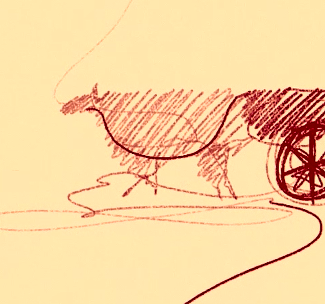
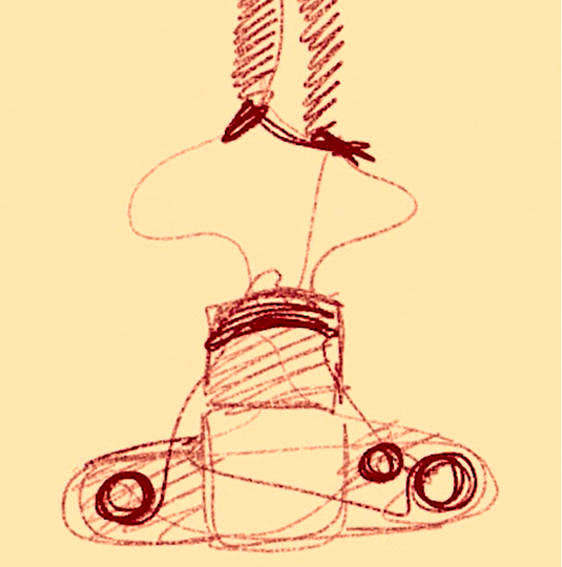
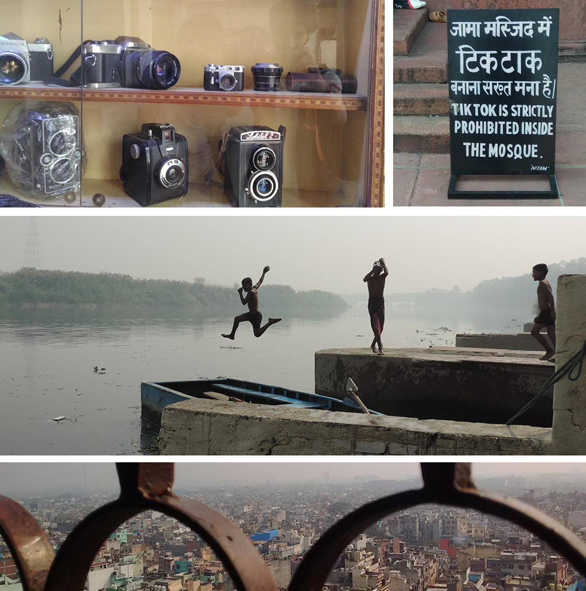
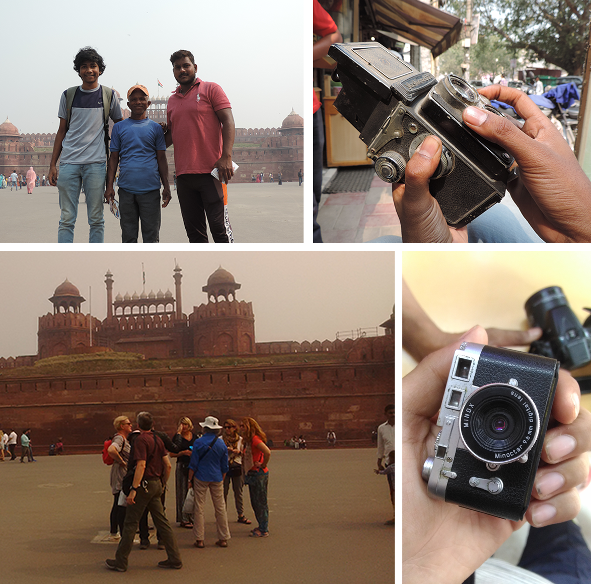

VideoThis project was done in collaboration with Vineet & AnkitThe animation style is inspired from the dyanmism of Delhi's history so that people can now only watch but feel the story we wanted to tell. Delhi have been ruined and built many times but it never stopped. The mighty Yamuna being a spectator to all this have been flowing continuously till this date. Therefore we animated this in similar dynamic style. Stories On a trip to Chandani Chowk, we saw something simple but unsual. A bullock cart was stranded in the middle of the road and people were doing all sort of parkour to cross it from sides. Nobody stopped and gazed a look at the cart which reveals much about the dymic nature of the city.  We talked to photographers at Red Fort who click pictures of tourists and get the pictures printed. We interviewed people, found stories and studied the effect of modernization in the field. Then our love for camera took us to the camera market of Chandani Chowk where we found many gems including a Hasselblad in mint condition which we want to buy till this date.    |